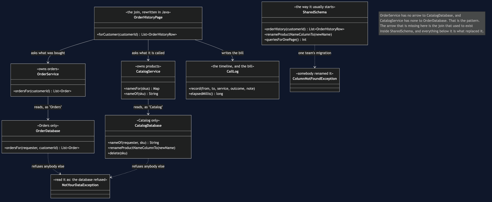
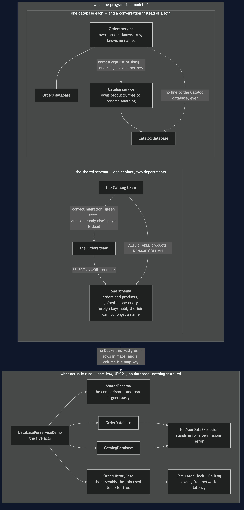
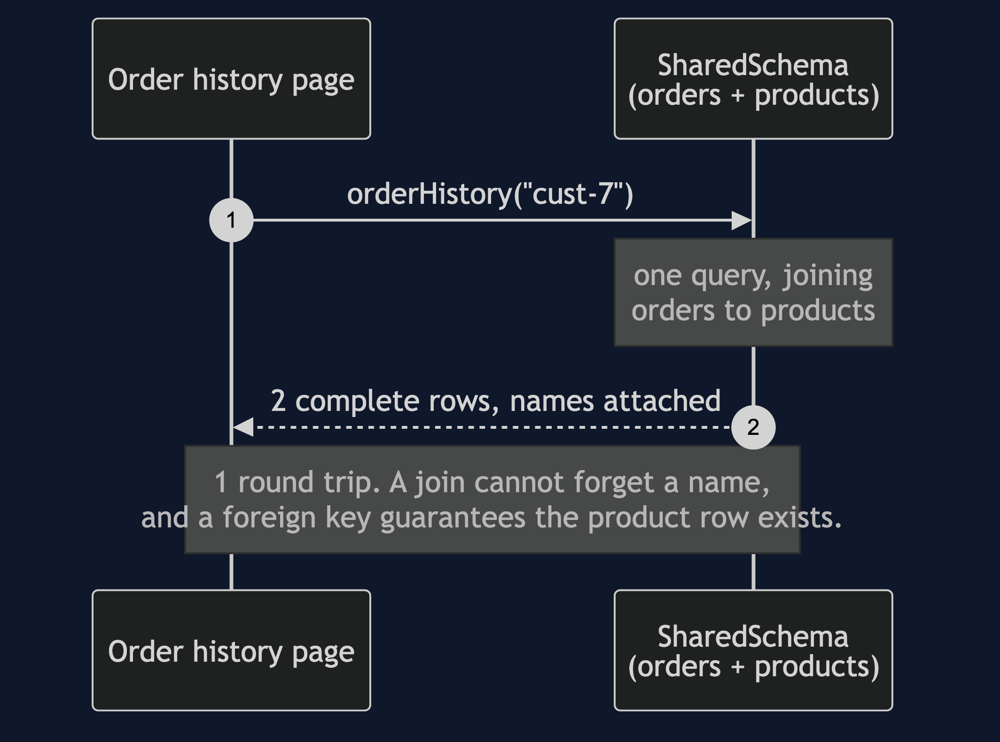
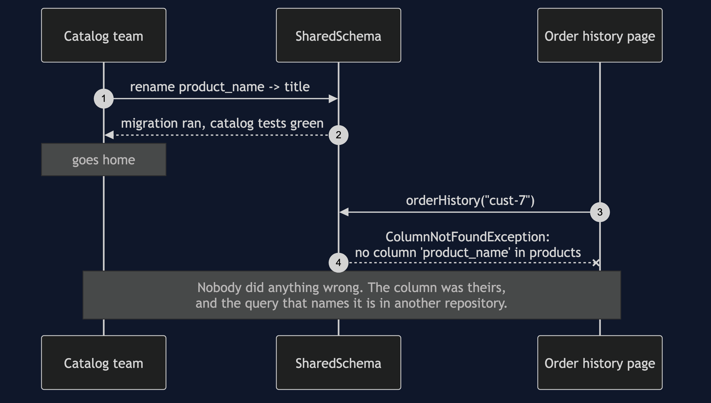
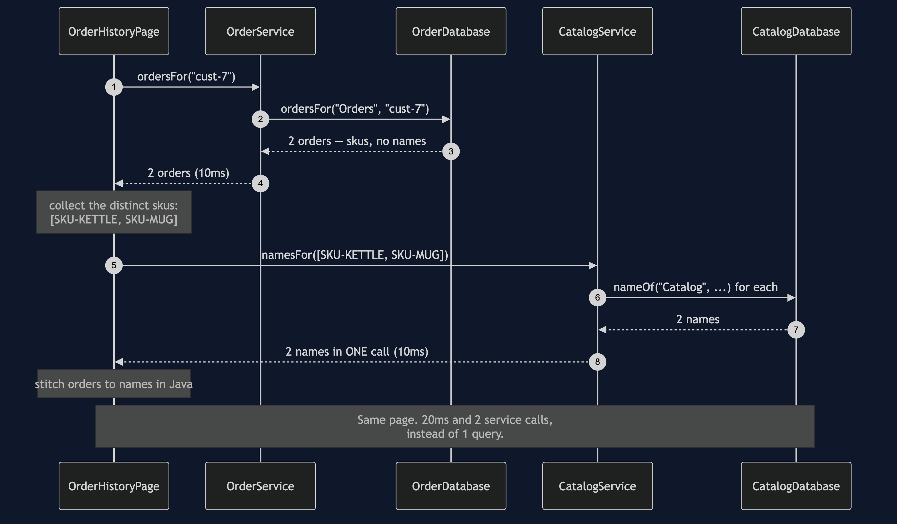
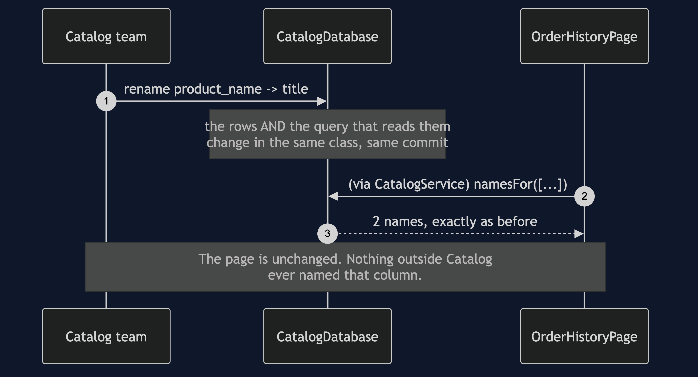
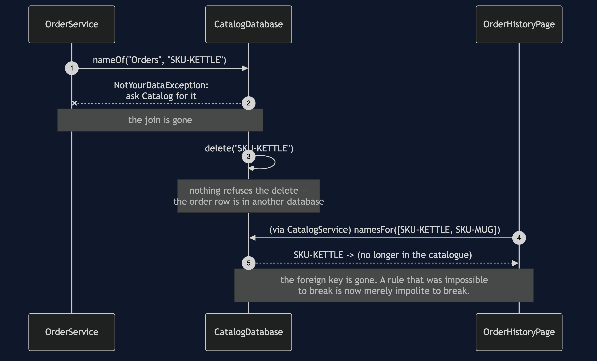

Database per Service
In plain words: each service keeps its own data and nobody else is allowed to read it directly. If you want somebody else's data, you ask them for it.
Everyday analogy: two departments that stop sharing a filing cabinet. While they share it, either one can reorganise the folders and break the other without knowing. Once each has its own cabinet, they are free to reorganise — and the price is that a question spanning both departments now needs two conversations instead of one look in a drawer. Everything difficult in the rest of this category is that price being paid.
In the shop, Orders and Catalog share one schema, and the order history page joins across both tables. It is fast, it is correct, and it means the catalog team cannot rename a column without breaking checkout.
The shared database, working
ord-101 SKU-KETTLE Stainless Steel Kettle x1
ord-102 SKU-MUG Blue Stoneware Mug x4
database round trips: 1One query. One join, done by an engine that is extremely good at joins. Every row has a product name, because a join cannot forget one, and a foreign key guarantees the product row is there to be joined to. If a shop can live like this, it should. Read SharedSchema before reading anything else in this project, and read it generously — the rest of the category is the story of giving this up.
The shared database, breaking
catalog team: migration ran, catalog tests green, done
order history page: no column 'product_name' in products -- somebody renamed itThe catalog team renamed a column in a table they own. Their migration was correct. Their tests passed. They had no way of knowing that a query in somebody else's repository named that column, because it is not in their code, not in their tests, and not in their build.
SharedSchemaTest pins this down, and every test in that class passes — including aRenameBreaksTheOrderHistoryPage. That is the shape of the problem. The failure is not a bug in anybody's code. It lives in the space between two teams, which is exactly the space that no test suite owns.
The split, doing the same job for more money
0ms -> 10ms Orders OK 2 order(s)
10ms -> 10ms OrderDb QUERY 2 order(s) for cust-7
10ms -> 20ms Catalog OK 2 name(s) in one call
20ms -> 20ms HistoryPage ASSEMBLED 2 row(s) from 2 services
the same page took 20ms and 2 service calls instead of 1 querySame page. Two network calls and an assembly step in Java instead of one query. Ask Orders what the customer bought, collect the skus, ask Catalog what they are called, stitch. OrderHistoryPage is that stitching, and the next project — API Composition — is about doing it properly.
Note CatalogService.namesFor, which takes a list. It is not a convenience. Asking once per sku would turn a four-row page into four network calls and a fifty-row page into fifty. The batch call is the difference between an assembly step and a disaster.
The pattern is a refusal
There is no algorithm here. OrderDatabase and CatalogDatabase each take the name of whoever is asking and throw NotYourDataException at anybody else. That is the whole pattern.
In a real shop nothing throws that exception, because the rule is not enforced in Java. The Orders service is given database credentials that simply cannot see the Catalog tables, and an attempt to read them fails as a permissions error. Read NotYourDataException as "the database refused". It is a class here only so that the rule is visible in a project small enough to read.
What it buys
Act 4 - the same rename, against a database Catalog owns
ord-101 SKU-KETTLE Stainless Steel Kettle x1
ord-102 SKU-MUG Blue Stoneware Mug x4
the page is unchanged.The rename that broke act 2 is now a non-event. Nothing outside Catalog ever named that column, so nothing outside Catalog can be surprised by it changing.
That is worth being precise about, because it is easy to oversell. Splitting the database bought no speed — the query engine was perfectly happy before, and act 3 is in fact slower. It bought no correctness. What it bought is that a team can change its mind without asking permission, and can deploy that change without coordinating a release with a team it has never met. That is an organisational benefit, and it is the only one on offer. If the two teams are the same three people, it is not worth the price.
What it costs
Two things, and the second is the one people forget.
The join is gone. Act 5 tries to read a product name from Orders and is refused. Every question that spans both services is now two calls and some code, and every report that used to be a SELECT with three joins now needs somewhere else to live.
The foreign key is gone.
b) Catalog deletes a product that an order refers to:
ord-101 SKU-KETTLE (no longer in the catalogue) x1The order still refers to SKU-KETTLE. Nothing stopped the delete, because there is no constraint left to stop it — the two rows are in different databases. Orders now holds a sku that Catalog has never heard of, and OrderHistoryPage has to decide what to render, so it renders (no longer in the catalogue) rather than crashing.
The page surviving is the good news and the bad news at once. A rule that used to be impossible to break is now merely impolite to break. It lives in code, in tests, and in agreements between teams — which is to say, in hope. The two projects at the end of this category, Transactional Outbox and Idempotent Consumer, exist because hope is not quite enough.
One JVM, no infrastructure
No Docker and no real database. SharedSchema, OrderDatabase and CatalogDatabase store rows in maps, and a column is a map key so that a rename is a real rename rather than a story about one. SimulatedClock makes the network latency in the timeline exact and free, so no test sleeps.
Technologies and versions
Nothing here is a range and nothing is latest: a course that worked last year and does not work today is worse than one that never took the dependency.
| What | Version | Why it is here |
|---|---|---|
| Java | 21 | The repository standard, requested through the Gradle toolchain block |
| Gradle | 9.2.1 | The wrapper in this directory; no separate install needed |
| JUnit 5 | 5.10.2 | The 16 tests, through junit-bom so the Jupiter artefacts cannot disagree |
That is the entire list, and the short version of it is the point. This project has no runtime dependency at all — the dependencies block in build.gradle names nothing but JUnit, and JUnit is testImplementation. There is no JDBC driver, no Postgres, no ORM and no container; a table is a map and a column is a map key, which is what makes a rename in act two a real rename rather than a story about one. Every one of the twelve projects in this category is built the same way, so a reader who can run one can run all of them, offline, with a JDK and nothing else.
Where this sits
The five projects before this one were about calls going wrong. This one is about who owns what, and it is the constraint the remaining four projects all answer to: API Composition assembles a page without a join, CQRS builds a queryable copy when assembling is not enough, and Saga replaces the transaction that used to span both tables.
Learning Material
| Document | What it covers |
|---|---|
docs/problem-statement.md | Two teams share a schema, one of them renames a column correctly, and somebody else's page dies |
docs/database-per-service-pattern-explained.md | The shared filing cabinet, the five acts, and the part most treatments skip — what the split costs |
docs/class-diagram.md | The structure, including the arrows that are missing on purpose between each service and the other's database |
docs/architecture-diagram.md | Who may read what, both arrangements side by side, and the line that is deliberately not drawn |
docs/data-flow-diagram.md | One order history page both ways: what work moves out of the database and into your code |
docs/sequence-diagram.md | Before and after in call order — one query and 10ms, against two calls, 20ms and an assembly step |
docs/uml-diagram.md | All five acts as sequences: one query, then a broken page, then two calls and an assembly |
docs/animation.html | The guarantees being handed back one at a time, step by step in a browser |
docs/prerequisites.md | What you need to know, what you explicitly do not (SQL, any real database), and 60-second primers |
docs/session.md | A one-hour taught session with exercises |
docs/spec.md | The generated specification, with measured test counts and timings |
docs/youtube.md | Title, description and chapters for the video |
video/README.md | The video pipeline, the scene list, and how to rebuild it |
The pattern in one picture
The class diagram, and the thing to look for is what is missing: neither service has an arrow to the other's database. The pattern is that absence, and nothing else.

What runs where
The lower half is the literal truth: one JVM, rows in maps. The upper half is the shop drawn twice — one cabinet shared by two departments, then one cabinet each and a conversation between them.

How the data moves
The same order history page along both routes. One is a query; the other is four steps, one of which exists only because a product can now be deleted while an order still names it.

Who calls whom, in order
Before and after in call order. Note which way the inequality goes: the split version is the slower one, and always will be.

All five acts
The full set from docs/uml-diagram.md, in the order that document argues them.
One. One database, one query. Fast, correct, and the thing the rest of this category is about giving up.

Two. The catalog team renames a column. A correct migration, green tests, and a dead page belonging to somebody they have never met.

Three. Two databases, two calls, one assembly. The same page for more money, with the join now written in Java.

Four. The same rename, against a database Catalog owns. A non-event, and the only thing the split actually bought.

Five. The bill. A refused read, and a deleted product that an order still refers to — with nothing left to prevent it.

Video
The narrated walkthrough is built from video/scenes.py by video/build_video.sh. It runs about seventeen and a half minutes across sixteen scenes, and the rendered file is not committed — see the repository README for why — so producing it takes about ten minutes on macOS.